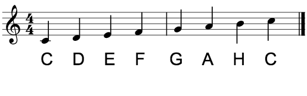

I en skala får alle tonene tildelt et navn og et nummer, basert på den første tonen i skalaen, grunntonen.
Tonene nummereres fra 1 til 8, og får navn som svarer til dette tallet.
Etter grunntonen får man sekund, ters, kvart, kvint, sekst, septim og til slutt oktav.
Kjært barn har mange navn, så man kan også enkelt nok kalle dem enern, toern, treern, osv.
Det forventes på ingen måte man kan lære å gjenkjenne disse intervallene på den tiden det tar å lese denne siden, men om du føler deg modig kan du prøve deg på quizzen på neste side. Her testes du kun i små og store sekunder, store terser og oktaver. Lykke til!